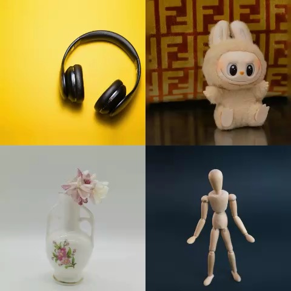
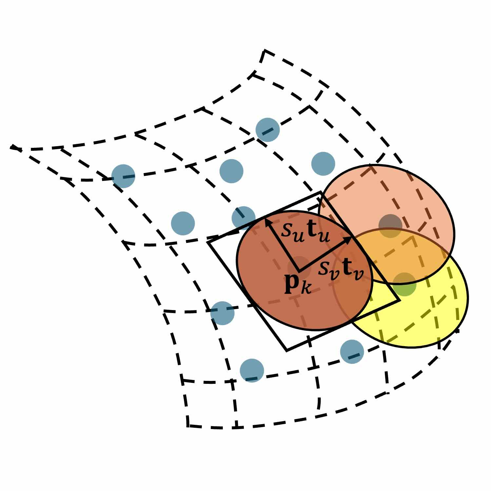
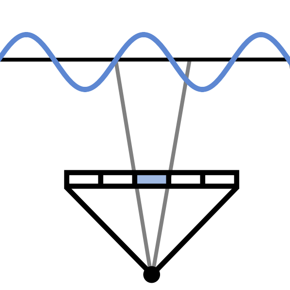
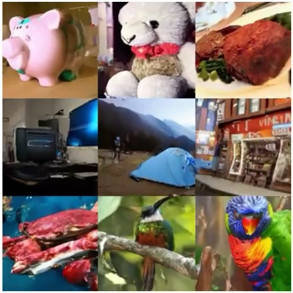
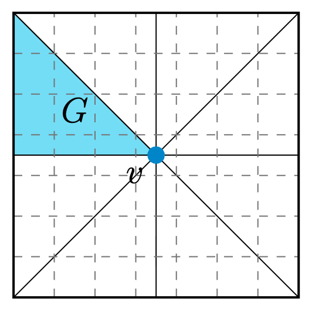

Research
See Google Scholar for a complete list of publications.
* indicates equal contribution.
|
 |
CUPID: Generative 3D Reconstruction via Joint Object and Pose Modeling
CVPR, 2026
Create canonically posed 3D object and an object-centric camera from single image in just a few seconds. |

|
|
GenFusion: Closing the Loop between Reconstruction and Generation via Videos
CVPR, 2025
Generative scene inpainting with a reconstruction-driven video generation model. |
|
 |
2D Gaussian Splatting for Geometrically Accurate Radiance Fields
SIGGRAPH, 2024 (Most Influential Paper#1)
Using surfels and a ray-cast based differentiable rasterizer enables efficient and high-fidelity geometry and apperance reconstruction from real images. |
|
 |
Mip-Splatting: Alias-free 3D Gaussian Splatting
CVPR, 2024 (Oral, Best Student Paper)
Mip-filters enables synthesizing alias-free scenes with 3D Gaussian Splatting. |
|
 |
3D-aware Image Generation using 2D Diffusion Models
ICCV, 2023
Create 3D consistent scene from a single image via iterative multiview RGBD sampling and fusion. |
|
 |
Look Before You Leap: Learning Landmark Features for One-Stage Visual Grounding
CVPR, 2021
A contex-aware one-stage vision-lanuage model to localize textual queries within cluttered scenes more accurately. |


Service
Journal reviewer: TPAMI, TVCG ...
Conference reviewer: SIGGRAPH, SIGGRAPH Asia, CVPR, ICCV, ECCV, ICLR, NeurIPS ...